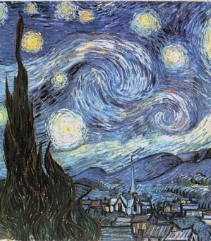
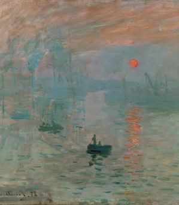
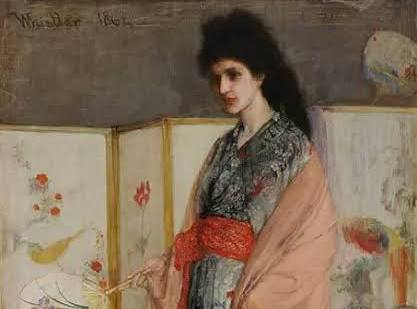
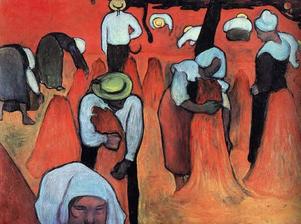
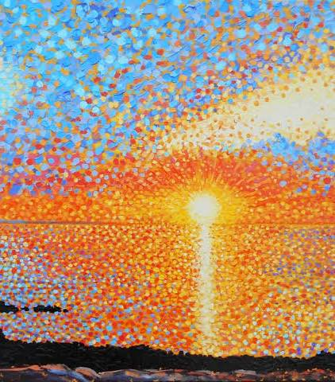
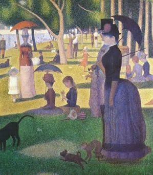

Períodos en los que Van Gogh participó
Fue partícipe de 9 períodos.
| Imágen | Período | Año | Resumen |
|---|---|---|---|
 |
Realismo Artístico | Siglo XIX (1840-1880) | El realismo es un movimiento artístico del siglo XIX (aprox. 1840-1880) que busca representar la vida cotidiana, los trabajadores y la realidad social sin idealizaciones ni temas heroicos, a diferencia del romanticismo. Surgió en Francia tras la Revolución de 1848, enfocándose en la veracidad, el compromiso social y la crítica a la burguesía, con figuras como Courbet, Millet y Daumier. |
|  |
Postimpresionismo | Siglo 1886-1905 | El posimpresionismo, fue un movimiento artístico francés que surgió como reacción a las limitaciones del impresionismo, buscando mayor expresión emocional, estructura y simbolismo. Artistas clave como Van Gogh, Cézanne, Gauguin y Seurat utilizaron colores vivos, pinceladas densas y formas distorsionadas para representar su visión subjetiva, no la realidad objetiva, sentando las bases del arte moderno. |
 |
Arte Moderno | Siglo 1850-1950 | El arte moderno es un periodo artístico, marcado por la ruptura con las reglas clásicas, el realismo y la academia. Iniciado con el impresionismo, los artistas buscaron nuevas formas de expresión, experimentando con el color, la abstracción y la subjetividad para reflejar la industrialización y los cambios sociales. |
|  |
Impresionismo | En la segunda mitad del siglo XIX (1874) | El impresionismo fue un movimiento artístico revolucionario surgido en Francia, caracterizado por capturar la luz, el color y el instante fugaz en escenas de la vida cotidiana y paisajes. Rompió con el arte académico usando pinceladas sueltas, colores puros y pintura al aire libre (plein air). |
|  |
Japonismo | Siglo 1972 | Japonismo es un término que se refiere a la influencia de las artes niponas en las occidentales. La palabra se usó por vez primera por Jules Claretie en su libro L'Art Francais en 1872 publicado ese año.[1] Las obras creadas a partir de la transferencia directa de los principios del arte japonés sobre el occidental, especialmente las realizadas por artistas franceses, reciben esta denominación. |
|  |
Cloisonismo | Siglo 1887-1888 | El cloisonismo es una técnica pictórica postimpresionista desarrollada por Émile Bernard y Louis Anquetin. Se caracteriza por áreas planas de color intenso delimitadas por contornos oscuros y gruesos, inspiradas en las vidrieras medievales y la estampa japonesa (ukiyo-e). Esta técnica busca la síntesis, la simplificación formal y el uso del color para la expresión emocional. |
|  |
Puntillismo | Siglo 1884 | El puntillismo es una técnica pictórica postimpresionista, iniciada en Francia por Georges Seurat y Paul Signac, que consiste en crear imágenes mediante la aplicación de diminutos puntos de colores puros. Estos puntos, sin mezclarse en la paleta, se combinan óptimamente en el ojo del espectador a cierta distancia. |
|  |
Neoimpresionismo | Finales del siglo XIX (1884-1886) | El neoimpresionismo es un movimiento pictórico francés que evolucionó del impresionismo hacia un enfoque más científico y estructurado, conocido como puntillismo o divisionismo. Liderado por Georges Seurat y Paul Signac, el estilo emplea puntos o toques pequeños de colores puros que se mezclan ópticamente en el ojo del espectador para maximizar la luminosidad. |